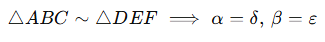
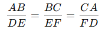

Semejanza de triángulos.
La semejanza de triángulos es un concepto fundamental en geometría que establece que dos triángulos son semejantes si tienen la misma forma, aunque no necesariamente el mismo tamaño. Esto significa que los ángulos correspondientes son iguales y los lados correspondientes son proporcionales.
Criterios de semejanza de triángulos
Existen tres criterios principales para determinar si dos triángulos son semejantes:
Ángulo-Ángulo (AA):
Dos triángulos son semejantes si tienen dos ángulos correspondientes iguales. Dado que la suma de los ángulos internos de un triángulo es 180∘, el tercer ángulo también será igual.

Lado-Lado-Lado (LLL):
Dos triángulos son semejantes si los tres lados correspondientes son proporcionales.

Lado-Ángulo-Lado (LAL):
Dos triángulos son semejantes si tienen un ángulo igual y los lados que forman ese ángulo son proporcionales.

Propiedades de los triángulos semejantes
Ángulos correspondientes iguales: Los ángulos correspondientes de triángulos semejantes tienen la misma medida.
Lados correspondientes proporcionales: Los lados correspondientes están en la misma razón:

Relación de las áreas: La relación de las áreas de dos triángulos semejantes es igual al cuadrado de la razón de sus lados correspondientes:

Aplicaciones de la semejanza de triángulos
Cálculo de longitudes desconocidas: Si se conoce la proporción de lados en dos triángulos semejantes, es posible calcular lados faltantes.
Alturas, medianas y bisectrices: En triángulos semejantes, las alturas, medianas y bisectrices correspondientes también están en la misma proporción que los lados correspondientes.
Proyección en la vida real: La semejanza se utiliza en arquitectura, diseño, cartografía, óptica, y muchas otras áreas.
Ejemplo:
Dos triángulos semejantes △ABC∼ △DEF tienen los lados:
AB=6cm, BC=9cm, CA=12cm, DE=4 cm, EF=?
Solución: Dado que los triángulos son semejantes:

Sustituyendo:

Resolvemos:

CONGRUENCIA DE TRIÁNGULOS.
La congruencia de triángulos es una propiedad geométrica que establece que dos triángulos son congruentes si tienen la misma forma y el mismo tamaño. Esto significa que sus ángulos correspondientes son iguales y sus lados correspondientes tienen la misma longitud.
Criterios de congruencia de triángulos
Lado-Lado-Lado (LLL):
Dos triángulos son congruentes si los tres lados correspondientes son iguales.
AB=DE, BC=EF, CA=FD ⟹ △ABC≅△DEF
Ángulo-Lado-Ángulo (ALA):
Dos triángulos son congruentes si tienen un lado igual y los dos ángulos adyacentes a ese lado también son iguales.
∠A=∠D, ∠B=∠E, AB=DE ⟹ △ABC≅△DEF
Ángulo-Ángulo-Lado (AAL):
Dos triángulos son congruentes si tienen dos ángulos iguales y el lado no comprendido entre ellos también es igual.
∠A=∠D, ∠C=∠F, AC=DF ⟹ △ABC≅△DEF
Hipotenusa-Cateto (HC):
Este criterio aplica solo a triángulos rectángulos. Dos triángulos rectángulos son congruentes si tienen la hipotenusa igual y uno de sus catetos iguales.
AB=DE, BC=EF ⟹ △ABC≅△DEFAB = DE,
Propiedades de los triángulos congruentes
Ángulos correspondientes iguales: Los ángulos correspondientes de triángulos congruentes tienen la misma medida.
Lados correspondientes iguales: Los lados correspondientes tienen la misma longitud.
Superposición: Si un triángulo se coloca sobre el otro, coincidirán exactamente en todos sus puntos.
Ejemplo práctico
Problema:
Dos triángulos tienen las siguientes características:
AB=DE=5 cm
AC=DF=7 cm
∠A=∠D=60∘
¿Son congruentes los triángulos?
Solución:
Aplicamos el criterio LAL:
AB=DEAB = DEAB=DE,
AC=DFAC = DFAC=DF,
∠A=∠D
Por lo tanto, △ABC≅△DEF